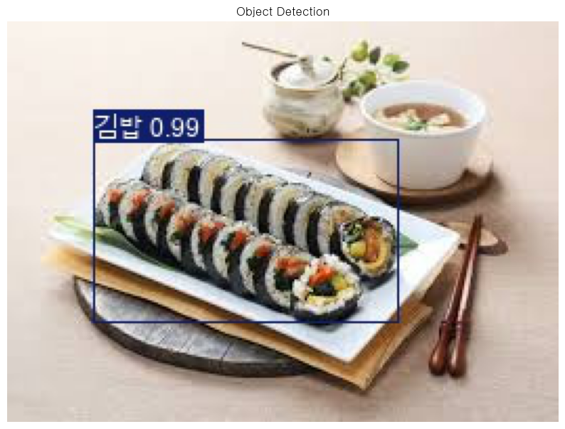

Dataset → Train → Validate → Predict
AI Hub YOLO 학습
이미지와 라벨부터 예측 그림까지.
어떤 데이터로 학습한 어느 모델의 결과인가?
학습 목표
- JPG·TXT·YAML과 Class ID를 연결한다.
- 파일 입력·BCHW·객체별 정답 Shape를 구분한다.
- 사전학습 모델·Loss·Optimizer·검증을 따라간다.
- Confidence·IoU·mAP와 Validation·Test를 구분한다.
- 실제 Weight 경로와 원문의 실행 상태를 대조한다.
- Box·Class·점수와 저장 그림을 함께 해석한다.
[S1] 79번 Notebook·통합교안 p.394~399. [S2] 앞선 ML 44 Step 1·2. [S3] 다음 80번 Notebook p.400. 아래는 기존 학습 내용의 재구성이며 새 학습·추론 결과가 아니다.
실습 목표·범위
이미지·라벨·경로·모델을 하나의 흐름으로 연결한다
교안 원문 · Cell 1
## AI HUB 데이타셋으로 학습AI Hub의 김밥 Q3 관련 JPG·TXT 샘플로 커스텀 객체 탐지 모델을 학습하고 새 이미지에서 원하는 Class를 찾는다. 칼로리·무게·김밥 조각 수를 계산하는 Notebook은 아니다.
| 구분 | 내용 |
|---|---|
| 원본 | 79_YOLO-Custom-Image-Detect-AIHub44.ipynb · 통합교안 p.394~399 |
| 구성 | 16개 Cell: 마크다운 4·코드 12 / 저장 출력 7개 / 그림 1개 |
| 원문에 있는 작업 | 준비사항 안내·학습·검증·저장 경로·모델 로드·Predict·시각화 |
| 원문에 없는 자동화 | 샘플 다운로드·자동 분할·라벨 변환·YAML 파일 생성 |
| 별도 확인하지 않은 자료 | 실제 JPG·TXT 전체, 실행 당시 YAML, Split 목록, best.pt 내부 |
| 보완의 성격 | Step 1·2의 Shape·좌표·API 해설·오류 진단· 추가 결과 조회 예시 |
[S1] p.394~399. [S2] ML 44 Step 1·2의 범위 구분.
핵심 개념
탐지 모델·데이터 설정·예측 결과는 서로 다르다
이미지 분류
이미지 전체의 대표 Class를 찾는다.
객체 탐지
이미지 안의 객체별 Class와 위치를 함께 찾는다.
| 대상 | 의미 |
|---|---|
| 이미지 | 모델의 입력 |
| TXT 라벨 | 객체별 정답 Class와 Box |
| Dataset YAML | 경로·Class 매핑을 연결하는 설정 |
| Weight .pt | 학습된 모델의 수치 |
| 예측 결과 | 새 이미지의 Box·Class·Confidence |
학습 Class는 다섯 개이고
classes=[4]는 예측 결과 필터다.
필터를 바꾸는 것과 모델을 다시 학습하는 것을 구분한다.
[S1] Cell 3·5·12. [S2] 분류·탐지·역할 구분.
그림처럼 이해
학습 흐름과 추론 흐름을 나누어 따라간다
사용자 준비 → 학습
저장 모델 → 새 이미지
| 공통 단계 | 이번 원문 |
|---|---|
| 문제·Dataset | 객체 탐지 / AI Hub JPG·TXT |
| 전처리·분할 | 폴더·YAML 준비 + 라이브러리 내부 처리 |
| Model | YOLO('yolo11m.pt') |
| compile | 별도 Keras compile 호출 없음 |
| fit | model.train(...) |
| evaluate | 학습 중 검증 + 종료 후 best.pt 검증 |
| predict | model.predict(...) |
별도 model.val() Cell도 없다.
검증은 train 실행 안에서 이루어진다.
원문 출력의 compile=False를 보고
Keras compile을 추가해야 한다고 생각하지 않는다.
| 변수 | 내용 |
|---|---|
| model | 처음 사전학습 객체 → 나중 best.pt 객체로 재대입 |
| result | train 반환값. 원문은 save_dir에 접근 |
| images | 이미지 배열이 아닌 입력 경로 문자열 |
| results | predict의 이미지별 결과 목록 |
| results[0] | 첫 이미지 결과 |
| pred_image | 저장 이미지를 연 Pillow 객체 |
[S1] Cell 5~15. [S2] 흐름도 재구성.
Cell 지도·개발 환경
화면의 Cell 순서와 실행 번호를 함께 읽는다
| Cell | 내용 | In / 저장 출력 수 |
|---|---|---|
| 1 | 단원 제목 | 마크다운 |
| 2 | Import | 1 / 0 |
| 3 | 데이터 준비 주석 | 2 / 0 |
| 4 | 폰트 설정 | 2 / 0 |
| 5 | 사전학습 모델·train | 19 / 1 |
| 6 | 학습 모델 로드 제목 | 마크다운 |
| 7 | os.path 경로 구성 | 6 / 1 |
| 8 | Path·dir(Path) | 7 / 1 |
| 9 | 현재 위치·경로 출력 | 12 / 1 |
| 10 | best.pt 로드·이미지 지정 | 22 / 1 |
| 11 | 예측 제목 | 마크다운 |
| 12 | predict | 24 / 1 |
| 13 | 시각화 제목 | 마크다운 |
| 14 | show | 26 / 0 |
| 15 | 저장 이미지 표시 | 25 / 1 |
| 16 | 빈 Cell | 실행 기록 없음 / 0 |
원본 저장 출력 발췌
Ultralytics 8.3.213 Python-3.13.7 torch-2.8.0+cpu CPU (13th Gen Intel Core(TM) i7-13700)원본 환경은 CPU다. 사용자의 현재 환경을 조회한 값이 아니다. 당시 로그의 8.3.214 업데이트 안내도 현재 최신 버전이라는 뜻이 아니다.
[S1] p.394~399 Cell 헤더·환경 로그.
도구·코드 해설
모델 기능과 표시 환경을 준비한다
교안 원문 · Cell 2
from ultralytics import YOLO
import matplotlib.font_manager as fm
from matplotlib import rc
import os- 무엇을 하는가?
- YOLO·폰트·os 기능을 가져온다.
- 왜 필요한가?
- 모델과 경로·표시 기능을 사용한다.
- 입력 Shape
- 배열 입력 없음.
- 출력·반환값
- 이름·기능 준비.
- 실행 후 변화
- 아직 Dataset 로드나 학습은 하지 않는다.
교안 원문 · Cell 4
#한글 폰트 설정
fp=fm.FontProperties(fname='C:\\Windows\\Fonts\\gulim.ttc')
rc('font',family=fp.get_name())- 무엇을 하는가?
- Windows 굴림 폰트를 Matplotlib에 설정한다.
- 왜 필요한가?
- 한글 표시를 준비한다.
- 입력 Shape
- 폰트 파일 경로.
- 출력·반환값
- 폰트 객체와 표시 설정.
- 실행 후 변화
- 모델 Weight와 데이터는 바꾸지 않는다.
Pillow·Matplotlib pyplot·Path는 뒤 Cell에서 추가한다. 폰트 경로가 실제 환경에 있는지 확인한다. Matplotlib 글자·YOLO 이미지 Label·터미널 문자열은 별도 표시 경로다.
[S1] Cell 2·4·8·10. [S2] 표시 환경 구분.
Dataset 구조
이미지·라벨을 같은 Sample 쌍으로 준비한다
원문이 안내한 AI Hub 샘플 위치를 아래처럼 읽는다. 원본 준비사항 전체는 접힌 영역에 보존했다.
이미지 JPG
원천데이터/합본_양추정_이미지_TRAIN/image/김밥/Q3
정답 TXT
라벨링데이터/음식양추정/양추정_라벨링_TRAIN/txt/김밥/Q3Cell 3 준비사항 주석 전체
교안 원문 · Cell 3
# 준비사항
# 1.https://aihub.or.kr/aihubdata/data/view.do?currMenu=115&topMenu=100&dataSetSn=74 에서 샘플 데이타 다운로드
# 2. AIHUB_config.yaml파일 작성
# path: ./yolo/aihub
# train: train
# val: valid
# nc: 5
# names:
# 0: spoon
# 1: fork
# 2: coin
# 3: dish
# 4: 김밥
# 3.datasets 폴더 하위에 위 야물 파일 구조대로 폴더 생성후
# 샘플 파일 이미지 파일(.jpg)(\원천데이터\합본_양추정_이미지_TRAIN\image\김밥\Q3)와
# 샘플 레이블링 파일(.txt)(\라벨링데이터\음식양추정\양추정_라벨링_TRAIN\txt\김밥\Q3)을
# 8:2나 9:1정도의 비율로 아래 train폴더 및 valid폴더 하위의 각 폴더에 위치 시킨다
# datasets
# |
# |-yolo - aihub - |-train
# | |-images
# | |-labels
# |-valid
# | |-images
# | |-labels
작업 폴더/
├─ AIHUB_config.yaml
└─ datasets/
└─ yolo/
└─ aihub/
├─ train/
│ ├─ images/
│ └─ labels/
└─ valid/
├─ images/
└─ labels/- 무엇을 하는가?
- 샘플과 정답을 준비하여 분할·배치한다.
- 왜 필요한가?
- 이미지와 객체 정답을 연결한다.
- 입력 Shape
- JPG·TXT 파일.
- 출력·반환값
- 사용자가 준비한 Dataset 폴더.
- 실행 후 변화
- 주석 실행만으로 다운로드·분할·폴더 생성이 되지 않는다.
images/sample_001.jpg와
labels/sample_001.txt는 같은 Sample 쌍이다.
이미지와 정답을 서로 다른 Split에 두지 않는다.
이름만 맞고 내용이 다른지도 실제 라벨 확인이 필요하다.
[S1] p.394 Cell 3. 폴더 도식은 원문 주석 재구성.
설정 YAML·Class ID
경로와 다섯 Class의 대응을 고정한다
원문 주석을 YAML 형태로 정리 · 실제 별도 파일을 조회한 것은 아님
path: ./yolo/aihub
train: train
val: valid
nc: 5
names:
0: spoon
1: fork
2: coin
3: dish
4: 김밥| 설정 | 역할 |
|---|---|
| path | Dataset 기준 경로 |
| train | Training 위치 |
| val | Validation 위치. valid는 폴더명 |
| nc | Class 수 5개 |
| names | 0 spoon / 1 fork / 2 coin / 3 dish / 4 김밥 |
datasets/yolo/aihub실제 로그:
datasets/yolo_datasets/aihub당시 실제 YAML이 없어 차이가 생긴 수정 경위를 확정할 수 없다.
Step 1·2 보완 상대 Dataset 경로는 YAML과 Dataset 기준 디렉터리 설정의 영향을 받을 수 있다. 실제 스캔 경로를 확인한다. TXT의 ID·YAML names·로드한 모델의 이름 매핑을 함께 본다.
[S1] p.394 YAML 안내·p.395 스캔 로그. [S2] 경로 보완.
X / y 구조·좌표
정답은 객체별 Class와 정규화 Box다
X
이미지 파일들. 원문은 X_train 배열을 직접 만들지 않는다.
y
이미지마다 있는 객체들의 Class와 위치. 객체 수는 가변적이다.
Step 1·2 라벨 형식 보완 · 실제 TXT를 읽은 값 아님
class_id x_center y_center width height
설명용 예시
4 0.50 0.55 0.60 0.40| 값 | 의미 |
|---|---|
| 4 | Class ID |
| 0.50 | 너비로 정규화한 중심 x |
| 0.55 | 높이로 정규화한 중심 y |
| 0.60 | 정규화한 Box 너비 |
| 0.40 | 정규화한 Box 높이 |
yc = (ymin + ymax) / (2H)
w = (xmax − xmin) / W
h = (ymax − ymin) / H
W·H는 해당 이미지의 너비·높이다. 원문에는 좌표 변환 코드가 없다. 위는 형식 이해를 위한 보완이고 변환 완료를 검증한 결과가 아니다.
[S1] Cell 3: JPG·TXT 사용 안내. [S2] YOLO 라벨 규격·좌표식 보완.
Train / Validation / Test
70장·10장·50개 객체를 구분한다
원본 저장 출력 발췌
train: ... 70 images, 0 backgrounds, 0 corrupt
val: ... 10 images, 0 backgrounds, 0 corrupt| 구분 | 수량·내용 |
|---|---|
| Training | 70장 |
| Validation | 10장 |
| Validation 정답 객체 | 50개 |
| 분할 비율 계산 | 70/80=87.5%, 10/80=12.5% |
| 독립 Test | 원문 설정·평가 없음 |
| 새 예측 이미지 | google_kimbap.jpg 한 장. 정답 Box 비교 평가 아님 |
준비 주석은 8:2 또는 9:1을 안내하지만 실행은 70:10을 보여 준다. Notebook이 정확히 8:2로 자동 분할했다고 설명하지 않는다.
[S1] p.394 분할 안내·p.395 스캔·p.396 검증.
전처리·Shape 흐름
파일 입력과 모델 Tensor는 축 순서가 다르다
Step 1·2 전처리 보완
원문에는 astype()/255를 직접 수행하는 코드가 없다. 경로 입력에서는 라이브러리가 전처리한다. MNIST 때의 전처리를 임의로 중복 적용하지 않는다.
| 단계 | Shape·구조 | 근거 |
|---|---|---|
| 컬러 이미지 배열 | (H,W,3) | 입력 형식 보완 |
| 모델 Batch | (B,3,H,W) | 입력 형식 보완 |
| 학습 설정 | batch=16, imgsz=640 | 원본 로그 |
| 전체 학습 Batch 설명 | (16,3,640,640) | 설정에서 설명, 직접 출력 아님 |
| 이미지별 라벨 | (Nᵢ,5) | TXT 형식 보완 |
| 실제 추론 Tensor | (1,3,480,640) | 원본 출력 |
정답은 이미지마다 Nᵢ개 객체이므로 고정된 (B,5)가 아니다. 실제 DataLoader는 객체가 어느 이미지에 속하는지도 관리한다. 원본은 정답 Batch Tensor를 출력하지 않는다.
공통 설정에 pose·format 같은 이름이 함께 출력되어도 이번 task=detect가 포즈 학습이나 TorchScript 내보내기를 수행했다는 뜻은 아니다.
[S1] p.395 설정·p.398 추론 Shape. [S2] 입력 계약·전처리 보완.
Model·train 코드
사전학습 YOLO11m을 다섯 Class에 맞춘다
교안 원문 · Cell 5
# 한번 학습 후 주석 처리
model = YOLO('yolo11m.pt')
# #커스텀 이미지로 훈련
result = model.train(data='AIHUB_config.yaml',epochs=50,patience=3)#연속해서 3번 개선(mAP50-95)이 안되서 조기 종료 일어남- 무엇을 하는가?
- 사전학습 모델을 로드하고 내 데이터로 학습한다.
- 왜 필요한가?
- 커스텀 탐지 Weight를 얻는다.
- 입력 Shape
- 호출에는 모델·YAML 경로. 이미지 Batch는 내부 구성.
- 출력·반환값
- 로그·저장 파일·result가 받는 반환값.
- 실행 후 변화
- Weight 학습, Validation, 모델 저장이 수행된다.
| 인자 | 역할 |
|---|---|
| data | Dataset YAML |
| epochs=50 | 최대 Epoch |
| patience=3 | 검증 개선이 없을 때 대기 |
원본 저장 출력 발췌
Overriding model.yaml nc=80 with nc=5
Transferred 643/649 items from pretrained weights
Freezing layer 'model.23.dfl.conv.weight'643/649는 전달된 Weight 항목 기록으로 이미지 수나 정확도가 아니다. 특정 DFL Layer의 동결 기록을 Backbone 전체 동결로 확대하지 않는다.
[S1] p.394 Cell 5·p.395 구조·Weight 전달.
Model Architecture
여러 Feature Map을 결합한 뒤 탐지한다
위는 구조 로그를 이해하기 위한 HTML 요약이다. 원본 아키텍처 이미지나 새로 학습한 모델이 아니다.
원본 저장 출력 발췌
23 [16, 19, 22] 1 1414879 ultralytics.nn.modules.head.Detect [5, [256, 512, 512]]마지막 Detect는 5 Class와 세 Feature Map의 Channel 구성을 받는다. 이 5를 탐지 Box 개수로 읽지 않는다.
| 시점 | Layers | Parameters | Gradients | GFLOPs |
|---|---|---|---|---|
| 학습 구성 | 231 | 20,056,863 | 20,056,847 | 68.2 |
| best.pt 검증 · fused | 125 | 20,033,887 | 0 | 67.7 |
Step 1·2 구조 보완
추론용 fusion은 Conv·BatchNorm 같은 연산을 결합할 수 있어 집계가 달라질 수 있다. 검증·추론에서 Gradient를 계산하지 않는 상태는 학습 중 Gradient 소실의 증거가 아니다. 모델 크기를 임의로 바꿨다고도 해석하지 않는다.
[S1] p.395 구조 표·p.396 fused Summary. [S2] fusion 해설.
Loss 해석
box_loss·cls_loss·dfl_loss의 질문이 다르다
| 손실 | 이해할 질문 |
|---|---|
| box_loss | 정답 Box의 위치·형태와 얼마나 맞는가? |
| cls_loss | 객체 Class를 얼마나 맞추는가? |
| dfl_loss | Box 위치의 분포형 표현을 얼마나 잘 학습하는가? |
원본 저장 출력 발췌
box=7.5, cls=0.5, dfl=1.5Step 1·2 손실 보완 관련 탐지 손실은 IoU 계열 Box 손실·BCE 기반 Class 손실·DFL을 포함한다. 위 식은 구성 관계이며 출력 숫자의 단순 재계산식이 아니다.
Loss가 낮아지는 것과 검증 mAP가 높아지는지는 따로 확인한다. 개별 탐지 Confidence는 또 다른 값이다.
[S1] p.395 설정·p.395~396 학습 표. [S2] 손실 구성 보완.
Optimizer·실제 실행 조건
auto의 실제 선택 결과를 읽는다
| 항목 | 기록 |
|---|---|
| Optimizer 설정 | optimizer=auto |
| 초기 표시 값 | lr0=0.01, momentum=0.937 |
| 자동 선택 메시지 | 위 lr0·momentum을 무시한다고 표시 |
| 선택 결과 | AdamW(lr=0.001111, momentum=0.9) |
| DataLoader | 설정 workers=8, 실제 사용 메시지 0 |
| 장치·입력 | CPU / batch=16 / imgsz=640 |
원본 저장 출력 발췌
optimizer: 'optimizer=auto' found, ignoring 'lr0=0.01' and 'momentum=0.937' and determining best 'optimizer', 'lr0' and 'momentum' automatically...
optimizer: AdamW(lr=0.001111, momentum=0.9) with parameter groups 106 weight(decay=0.0), 113 weight(decay=0.0005), 112 bias(decay=0.0)
Image sizes 640 train, 640 val
Using 0 dataloader workers[S1] p.395 초기 설정·Optimizer 선택 로그.
학습 흐름·출력 결과
최대 50 Epoch, 실제 종료 6 Epoch, 선택 3 Epoch
| Epoch | box_loss | cls_loss | dfl_loss | P | R | mAP50 | mAP50-95 |
|---|---|---|---|---|---|---|---|
| 1 | 1.275 | 3.273 | 1.389 | 0.715 | 0.476 | 0.520 | 0.383 |
| 2 | 0.831 | 1.241 | 1.093 | 0.960 | 0.993 | 0.995 | 0.682 |
| 3 | 0.7186 | 0.7208 | 0.9859 | 0.977 | 1.000 | 0.995 | 0.785 · 선택 |
| 4 | 0.7424 | 0.6660 | 1.0180 | 0.966 | 0.973 | 0.978 | 0.765 |
| 5 | 0.7227 | 0.5982 | 0.9783 | 0.902 | 0.989 | 0.961 | 0.706 |
| 6 | 0.6880 | 0.5713 | 0.9609 | 0.891 | 0.996 | 0.978 | 0.701 |
5 × 6 = 30 Batch 처리
30은 설정에 따른 Batch 처리 횟수다. Gradient 누적 등 내부 동작을 따로 확인하지 않고 Optimizer가 정확히 30번 업데이트되었다고 단정하지 않는다. Training 진행의 Instances 45·64·65·45·64·69도 전체 객체 수로 더하지 않는다.
최적 mAP50-95 0.785
갱신 실패 1
갱신 실패 2
갱신 실패 3
원본 저장 출력 발췌
EarlyStopping: Training stopped early as no improvement observed in last 3 epochs. Best results observed at epoch 3, best model saved as best.pt.
6 epochs completed in 0.205 hours.Step 1·2 보완 조기 종료는 내부 검증 fitness의 개선을 판단하는 구조다. 위 흐름은 원문 주석·로그·최적 Epoch 메시지를 연결한 설명이지 모든 작업·버전의 판단식을 확정한 것은 아니다.
0.205시간은 약 12.3분이다. 원본은 best.pt·last.pt 각각 40.5MB를 출력한다. 환경이 달라도 같은 시간·크기를 보장하는 수치는 아니다.
Cell 5 전체 저장 로그 보기 · ANSI 색상 제어만 제거
원본 저장 출력 · Cell 5
New https://pypi.org/project/ultralytics/8.3.214 available Update with 'pip install -U ultralytics'
Ultralytics 8.3.213 Python-3.13.7 torch-2.8.0+cpu CPU (13th Gen Intel Core(TM) i7-13700)
engine\trainer: agnostic_nms=False, amp=True, augment=False, auto_augment=randaugment, batch=16, bgr=0.0, box=7.5, cache=False, cfg=None, classes=None, close_mosaic=10, cls=0.5, compile=False, conf=None, copy_paste=0.0, copy_paste_mode=flip, cos_lr=False, cutmix=0.0, data=AIHUB_config.yaml, degrees=0.0, deterministic=True, device=cpu, dfl=1.5, dnn=False, dropout=0.0, dynamic=False, embed=None, epochs=50, erasing=0.4, exist_ok=False, fliplr=0.5, flipud=0.0, format=torchscript, fraction=1.0, freeze=None, half=False, hsv_h=0.015, hsv_s=0.7, hsv_v=0.4, imgsz=640, int8=False, iou=0.7, keras=False, kobj=1.0, line_width=None, lr0=0.01, lrf=0.01, mask_ratio=4, max_det=300, mixup=0.0, mode=train, model=yolo11m.pt, momentum=0.937, mosaic=1.0, multi_scale=False, name=train18, nbs=64, nms=False, opset=None, optimize=False, optimizer=auto, overlap_mask=True, patience=3, perspective=0.0, plots=True, pose=12.0, pretrained=True, profile=False, project=None, rect=False, resume=False, retina_masks=False, save=True, save_conf=False, save_crop=False, save_dir=D:\CCH\Workspace\Python\mldl\runs\detect\train18, save_frames=False, save_json=False, save_period=-1, save_txt=False, scale=0.5, seed=0, shear=0.0, show=False, show_boxes=True, show_conf=True, show_labels=True, simplify=True, single_cls=False, source=None, split=val, stream_buffer=False, task=detect, time=None, tracker=botsort.yaml, translate=0.1, val=True, verbose=True, vid_stride=1, visualize=False, warmup_bias_lr=0.1, warmup_epochs=3.0, warmup_momentum=0.8, weight_decay=0.0005, workers=8, workspace=None
Overriding model.yaml nc=80 with nc=5
from n params module arguments
0 -1 1 1856 ultralytics.nn.modules.conv.Conv [3, 64, 3, 2]
1 -1 1 73984 ultralytics.nn.modules.conv.Conv [64, 128, 3, 2]
2 -1 1 111872 ultralytics.nn.modules.block.C3k2 [128, 256, 1, True, 0.25]
3 -1 1 590336 ultralytics.nn.modules.conv.Conv [256, 256, 3, 2]
4 -1 1 444928 ultralytics.nn.modules.block.C3k2 [256, 512, 1, True, 0.25]
5 -1 1 2360320 ultralytics.nn.modules.conv.Conv [512, 512, 3, 2]
6 -1 1 1380352 ultralytics.nn.modules.block.C3k2 [512, 512, 1, True]
7 -1 1 2360320 ultralytics.nn.modules.conv.Conv [512, 512, 3, 2]
8 -1 1 1380352 ultralytics.nn.modules.block.C3k2 [512, 512, 1, True]
9 -1 1 656896 ultralytics.nn.modules.block.SPPF [512, 512, 5]
10 -1 1 990976 ultralytics.nn.modules.block.C2PSA [512, 512, 1]
11 -1 1 0 torch.nn.modules.upsampling.Upsample [None, 2, 'nearest']
12 [-1, 6] 1 0 ultralytics.nn.modules.conv.Concat [1]
13 -1 1 1642496 ultralytics.nn.modules.block.C3k2 [1024, 512, 1, True]
14 -1 1 0 torch.nn.modules.upsampling.Upsample [None, 2, 'nearest']
15 [-1, 4] 1 0 ultralytics.nn.modules.conv.Concat [1]
16 -1 1 542720 ultralytics.nn.modules.block.C3k2 [1024, 256, 1, True]
17 -1 1 590336 ultralytics.nn.modules.conv.Conv [256, 256, 3, 2]
18 [-1, 13] 1 0 ultralytics.nn.modules.conv.Concat [1]
19 -1 1 1511424 ultralytics.nn.modules.block.C3k2 [768, 512, 1, True]
20 -1 1 2360320 ultralytics.nn.modules.conv.Conv [512, 512, 3, 2]
21 [-1, 10] 1 0 ultralytics.nn.modules.conv.Concat [1]
22 -1 1 1642496 ultralytics.nn.modules.block.C3k2 [1024, 512, 1, True]
23 [16, 19, 22] 1 1414879 ultralytics.nn.modules.head.Detect [5, [256, 512, 512]]
YOLO11m summary: 231 layers, 20,056,863 parameters, 20,056,847 gradients, 68.2 GFLOPs
Transferred 643/649 items from pretrained weights
Freezing layer 'model.23.dfl.conv.weight'
train: Fast image access (ping: 0.00.0 ms, read: 1238.3415.4 MB/s, size: 2906.6 KB)
train: Scanning D:\CCH\Workspace\Python\mldl\datasets\yolo_datasets\aihub\train\labels.cache... 70 images, 0 backgrounds, 0 corrupt: 100% ━━━━━━━━━━━━ 70/70 104.3Kit/s 0.0s
val: Fast image access (ping: 0.00.0 ms, read: 1566.1159.4 MB/s, size: 2535.1 KB)
val: Scanning D:\CCH\Workspace\Python\mldl\datasets\yolo_datasets\aihub\valid\labels.cache... 10 images, 0 backgrounds, 0 corrupt: 100% ━━━━━━━━━━━━ 10/10 7.4Kit/s 0.0s
Plotting labels to D:\CCH\Workspace\Python\mldl\runs\detect\train18\labels.jpg...
optimizer: 'optimizer=auto' found, ignoring 'lr0=0.01' and 'momentum=0.937' and determining best 'optimizer', 'lr0' and 'momentum' automatically...
optimizer: AdamW(lr=0.001111, momentum=0.9) with parameter groups 106 weight(decay=0.0), 113 weight(decay=0.0005), 112 bias(decay=0.0)
Image sizes 640 train, 640 val
Using 0 dataloader workers
Logging results to D:\CCH\Workspace\Python\mldl\runs\detect\train18
Starting training for 50 epochs...
Epoch GPU_mem box_loss cls_loss dfl_loss Instances Size
1/50 0G 1.275 3.273 1.389 45 640: 100% ━━━━━━━━━━━━ 5/5 0.0it/s 2:0722.0s
Class Images Instances Box(P R mAP50 mAP50-95): 100% ━━━━━━━━━━━━ 1/1 0.2it/s 4.9s
all 10 50 0.715 0.476 0.52 0.383
Epoch GPU_mem box_loss cls_loss dfl_loss Instances Size
2/50 0G 0.831 1.241 1.093 64 640: 100% ━━━━━━━━━━━━ 5/5 0.0it/s 1:5320.4s
Class Images Instances Box(P R mAP50 mAP50-95): 100% ━━━━━━━━━━━━ 1/1 0.2it/s 4.9s
all 10 50 0.96 0.993 0.995 0.682
Epoch GPU_mem box_loss cls_loss dfl_loss Instances Size
3/50 0G 0.7186 0.7208 0.9859 65 640: 100% ━━━━━━━━━━━━ 5/5 0.0it/s 1:5520.6s
Class Images Instances Box(P R mAP50 mAP50-95): 100% ━━━━━━━━━━━━ 1/1 0.2it/s 5.0s
all 10 50 0.977 1 0.995 0.785
Epoch GPU_mem box_loss cls_loss dfl_loss Instances Size
4/50 0G 0.7424 0.666 1.018 45 640: 100% ━━━━━━━━━━━━ 5/5 0.0it/s 1:5220.1s
Class Images Instances Box(P R mAP50 mAP50-95): 100% ━━━━━━━━━━━━ 1/1 0.2it/s 5.1s
all 10 50 0.966 0.973 0.978 0.765
Epoch GPU_mem box_loss cls_loss dfl_loss Instances Size
5/50 0G 0.7227 0.5982 0.9783 64 640: 100% ━━━━━━━━━━━━ 5/5 0.0it/s 1:5421.4s
Class Images Instances Box(P R mAP50 mAP50-95): 100% ━━━━━━━━━━━━ 1/1 0.2it/s 5.1s
all 10 50 0.902 0.989 0.961 0.706
Epoch GPU_mem box_loss cls_loss dfl_loss Instances Size
6/50 0G 0.688 0.5713 0.9609 69 640: 100% ━━━━━━━━━━━━ 5/5 0.0it/s 1:5620.8s
Class Images Instances Box(P R mAP50 mAP50-95): 100% ━━━━━━━━━━━━ 1/1 0.2it/s 5.2s
all 10 50 0.891 0.996 0.978 0.701
EarlyStopping: Training stopped early as no improvement observed in last 3 epochs. Best results observed at epoch 3, best model saved as best.pt.
To update EarlyStopping(patience=3) pass a new patience value, i.e. `patience=300` or use `patience=0` to disable EarlyStopping.
6 epochs completed in 0.205 hours.
Optimizer stripped from D:\CCH\Workspace\Python\mldl\runs\detect\train18\weights\last.pt, 40.5MB
Optimizer stripped from D:\CCH\Workspace\Python\mldl\runs\detect\train18\weights\best.pt, 40.5MB
Validating D:\CCH\Workspace\Python\mldl\runs\detect\train18\weights\best.pt...
Ultralytics 8.3.213 Python-3.13.7 torch-2.8.0+cpu CPU (13th Gen Intel Core(TM) i7-13700)
YOLO11m summary (fused): 125 layers, 20,033,887 parameters, 0 gradients, 67.7 GFLOPs
Class Images Instances Box(P R mAP50 mAP50-95): 100% ━━━━━━━━━━━━ 1/1 0.2it/s 4.6s
all 10 50 0.976 1 0.995 0.785
spoon 10 10 0.994 1 0.995 0.719
fork 10 10 0.99 1 0.995 0.768
coin 10 10 0.994 1 0.995 0.782
dish 10 10 0.91 1 0.995 0.744
10 10 0.992 1 0.995 0.911
Speed: 1.5ms preprocess, 307.1ms inference, 0.0ms loss, 9.5ms postprocess per image
Results saved to D:\CCH\Workspace\Python\mldl\runs\detect\train18
[S1] p.395~396. Batch·시간 환산은 산술 계산.
검증·저장 모델
best.pt 검증은 별도 Test가 아니다
| Class | Images | Instances | P | R | mAP50 | mAP50-95 |
|---|---|---|---|---|---|---|
| 전체 | 10 | 50 | 0.976 | 1.000 | 0.995 | 0.785 |
| spoon | 10 | 10 | 0.994 | 1.000 | 0.995 | 0.719 |
| fork | 10 | 10 | 0.990 | 1.000 | 0.995 | 0.768 |
| coin | 10 | 10 | 0.994 | 1.000 | 0.995 | 0.782 |
| dish | 10 | 10 | 0.910 | 1.000 | 0.995 | 0.744 |
| 이름이 공백인 마지막 행 | 10 | 10 | 0.992 | 1.000 | 0.995 | 0.911 |
마지막 행은 YAML 예시의 다섯 번째 Class와 연결할 수 있는 위치지만 콘솔 이름은 공백으로 보존한다. Epoch 3 P=0.977과 최종 검증 P=0.976도 서로 다른 기록 그대로 읽는다.
runs/detect/train18/weights/
├─ best.pt
└─ last.ptbest.pt는 선택된 최적 상태, last.pt는 마지막 학습 상태를 저장하는 파일로 구분한다. 로그에는 두 파일에서 Optimizer를 제거했다는 메시지가 있으므로 모든 학습 상태의 정확한 재개까지 검증한 것은 아니다.
[S1] p.396 종료 후 best.pt 검증·저장 로그.
Metric 해석
Confidence·IoU·Precision·Recall·mAP를 나눈다
Step 1·2 Metric 보완
Precision = TP / (TP+FP)
Recall = TP / (TP+FN)
| 항목 | 의미 |
|---|---|
| IoU | 예측·정답 Box의 위치 겹침 |
| Precision | 내놓은 탐지 중 올바른 것은 얼마나 되는가? |
| Recall | 실제 정답 객체 중 찾아낸 것은 얼마나 되는가? |
| AP | Precision–Recall 관계를 종합 |
| mAP50 | IoU 0.50의 Class별 AP 평균 |
| mAP50-95 | IoU 0.50,0.55,…,0.95까지 평균 |
| Confidence | 개별 탐지 점수 |
| 분류 Accuracy | Class 일치율을 보는 별도 지표 |
객체 탐지 TP·FP·FN은 Class와 Box 일치 기준을 함께 고려한다. 검증 표의 P·R이 뒤의 predict(conf=0.7)에서 계산되었다고 가정하지 않는다.
이번은 Class·Box 탐지 문제이므로 원문은 R²를 쓰지 않는다. Class ID 4를 연속 목표값처럼 취급하지 않는다. Loss·Confidence·mAP는 서로 다른 값이다.
[S1] 검증 기록. [S2] IoU·AP·지표 구분.
저장 경로·os.path
경로를 만들었다고 파일을 검증한 것은 아니다
교안 원문 · Cell 6
#### 학습된 모델 로드교안 원문 · Cell 7
os.path.join(os.path.join(result.save_dir,'weights'),'best.pt')- 무엇을 하는가?
- save_dir에 weights/best.pt를 결합한다.
- 왜 필요한가?
- 로드할 경로를 만든다.
- 입력 Shape
- 경로 값, Tensor 입력 없음.
- 출력·반환값
- 경로 문자열.
- 실행 후 변화
- 문자열 구성뿐. 파일 검사·모델 로드는 하지 않는다.
원본 저장 출력 · Cell 7
'D:\\CCH\\Workspace\\Python\\mldl\\runs\\detect\\train17\\weights\\best.pt'[S1] p.396 Cell 6~7·학습 저장 경로.
Path·작업 디렉터리
result와 현재 Kernel의 상태를 확인한다
교안 원문 · Cell 8
#Path는 자바의 File클래스와 유사한 클래스
#os.path보다는 직관적이고 객체 지향적이다
from pathlib import Path
dir(Path)- 무엇을 하는가?
- Path를 가져와 기능 이름을 조회한다.
- 왜 필요한가?
- 경로 객체의 인터페이스를 살펴본다.
- 입력 Shape
- 클래스, 이미지 입력 없음.
- 출력·반환값
- dir(Path)의 이름 목록.
- 실행 후 변화
- 학습·로드·파일 변경 없음.
실습에서 연결할 이름은 cwd·exists·is_file·joinpath·name·parent·resolve 등이다. 아래 전체 출력은 원본 환경의 목록이며 이 이름들이 전부 실행된 것은 아니다.
Cell 8 dir(Path) 원본 전체 출력
원본 저장 출력 · Cell 8
['__bytes__',
'__class__',
'__delattr__',
'__dir__',
'__doc__',
'__eq__',
'__firstlineno__',
'__format__',
'__fspath__',
'__ge__',
'__getattribute__',
'__getstate__',
'__gt__',
'__hash__',
'__init__',
'__init_subclass__',
'__le__',
'__lt__',
'__module__',
'__ne__',
'__new__',
'__reduce__',
'__reduce_ex__',
'__repr__',
'__rtruediv__',
'__setattr__',
'__sizeof__',
'__slots__',
'__static_attributes__',
'__str__',
'__subclasshook__',
'__truediv__',
'_drv',
'_filter_trailing_slash',
'_format_parsed_parts',
'_from_parsed_parts',
'_from_parsed_string',
'_glob_selector',
'_globber',
'_hash',
'_max_symlinks',
'_parse_path',
'_parts_normcase',
'_parts_normcase_cached',
'_pattern_str',
'_raw_path',
'_raw_paths',
'_remove_leading_dot',
'_remove_trailing_slash',
'_resolving',
'_root',
'_stack',
'_str',
'_str_normcase',
'_str_normcase_cached',
'_tail',
'_tail_cached',
'_unsupported_msg',
'absolute',
'anchor',
'as_posix',
'as_uri',
'chmod',
'cwd',
'drive',
'exists',
'expanduser',
'from_uri',
'full_match',
'glob',
'group',
'hardlink_to',
'home',
'is_absolute',
'is_block_device',
'is_char_device',
'is_dir',
'is_fifo',
'is_file',
'is_junction',
'is_mount',
'is_relative_to',
'is_reserved',
'is_socket',
'is_symlink',
'iterdir',
'joinpath',
'lchmod',
'lstat',
'match',
'mkdir',
'name',
'open',
'owner',
'parent',
'parents',
'parser',
'parts',
'read_bytes',
'read_text',
'readlink',
'relative_to',
'rename',
'replace',
'resolve',
'rglob',
'rmdir',
'root',
'samefile',
'stat',
'stem',
'suffix',
'suffixes',
'symlink_to',
'touch',
'unlink',
'walk',
'with_name',
'with_segments',
'with_stem',
'with_suffix',
'write_bytes',
'write_text']교안 원문 · Cell 9
print(f'현재 경로:{Path.cwd()}')
#경로 결합시는 / 연산자 사용
print(f'경로 결합:{Path.cwd() / "datasets"}')
#print(result.save_dir,'weights'),'best.pt'
print(result.save_dir / 'weights' / 'best.pt')- 무엇을 하는가?
- 작업 위치·datasets·Weight 경로를 출력한다.
- 왜 필요한가?
- 상대 경로가 어디를 가리키는지 본다.
- 입력 Shape
- Path와 result.save_dir.
- 출력·반환값
- 세 경로 출력.
- 실행 후 변화
- 파일을 읽거나 모델을 로드하지 않는다.
원본 저장 출력 · Cell 9
현재 경로:D:\CCH\Workspace\Python\mldl
경로 결합:D:\CCH\Workspace\Python\mldl\datasets
D:\CCH\Workspace\Python\mldl\runs\detect\train17\weights\best.pt
Step 1·2 Python 보완 Path의 /는 경로 결합이다. 단순 문자열 나눗셈이 아니다. result가 새 Kernel에 없다면 후속 경로 구성은 실행할 수 없다.
[S1] p.396~398 Cell 8~9. [S2] Path 의미 보완.
모델 복원·코드와 출력 대조
현재 Cell 10 코드에는 predict가 없다
교안 원문 · Cell 10
from PIL import Image
import os
import matplotlib.pyplot as plt
#best.pt 파일을 임의의 폴더에 저장해서 로드해도 된다
#model= YOLO(os.path.join(os.path.join(str(result.save_dir),'weights'),'best.pt'))
model= YOLO(result.save_dir / 'weights' / 'best.pt')
#datasets디렉토리에 있는 이미지로 예측
#구글에서 다운받은 새로운 이미지
images='./datasets/yolo/google_kimbap.jpg'- 무엇을 하는가?
- best.pt를 읽고 입력 이미지 경로를 지정한다.
- 왜 필요한가?
- 학습 Weight로 새 이미지에 추론할 준비를 한다.
- 입력 Shape
- Weight 경로·이미지 경로 문자열.
- 출력·반환값
- model 재대입, images 문자열.
- 실행 후 변화
- 모델 로드. 현재 소스에는 예측 호출 없음.
원본 저장 출력 · Cell 10
image 1/1 D:\CCH\Workspace\Python\mldl\datasets\yolo\google_kimbap.jpg: 480x640 2 dishs, 1 , 318.4ms
Speed: 1.9ms preprocess, 318.4ms inference, 0.9ms postprocess per image at shape (1, 3, 480, 640)
Results saved to D:\CCH\Workspace\Python\mldl\runs\detect\predict45
model은 처음의 사전학습 객체에서 저장 Weight 객체로 다시 대입된다. images는 배열이 아니다. 학습 결과 result에 의존한 로드와 저장 파일을 직접 지정하는 독립 로드를 구분한다.
[S1] p.398 Cell 10 현재 소스·저장 출력.
Predict·필터
Class 4만 반환하는 것과 한 Class 학습은 다르다
교안 원문 · Cell 11
#### 예측하기교안 원문 · Cell 12
#results = model.predict(images, save=True, line_width=1,conf=0.7)
#classes 속성 : 예측을 클래스 ID 집합으로 필터링.지정된 클래스에 속하는 검출만 반환
results = model.predict(images, save=True, line_width=1,conf=0.7,classes=[4])- 무엇을 하는가?
- 새 이미지에서 탐지하고 조건에 맞는 결과를 반환·저장한다.
- 왜 필요한가?
- 커스텀 Weight를 실제 입력에 사용한다.
- 입력 Shape
- 이미지 경로. 로그 Tensor (1,3,480,640).
- 출력·반환값
- 이미지별 results 목록과 시각화 파일.
- 실행 후 변화
- 추론 수행, Weight 재학습 없음.
| 인자 | 의미 |
|---|---|
| images | 입력 경로 문자열 |
| save=True | 탐지 시각화 저장, Weight 저장 아님 |
| line_width=1 | 표시 Box 선 두께 |
| conf=0.7 | 반환할 탐지의 최소 점수 기준 |
| classes=[4] | Class 4 결과만 반환 |
원본 저장 출력 · Cell 12
image 1/1 D:\CCH\Workspace\Python\mldl\datasets\yolo\google_kimbap.jpg: 480x640 1 , 370.5ms
Speed: 2.1ms preprocess, 370.5ms inference, 3.0ms postprocess per image at shape (1, 3, 480, 640)
Results saved to D:\CCH\Workspace\Python\mldl\runs\detect\predict45
[S1] p.398 Cell 11~12. [S2] 추론 인자 의미.
Model 출력·Results
고정 확률 행렬이 아니라 가변 개수의 객체 결과다
Step 1·2 Results API 보완 · 원본은 배열 Shape를 직접 출력하지 않음
| 속성 | 구조·의미 |
|---|---|
| results | 이미지별 결과 목록 |
| results[0] | 첫 입력 이미지 결과 |
| boxes.xyxy | (N,4) Pixel 좌표 |
| boxes.conf | (N,) 탐지 점수 |
| boxes.cls | (N,) Class ID |
| boxes.data | 기본 비추적 탐지에서는 (N,6) |
| orig_shape | 원본 이미지 높이·너비 |
| names | Class ID와 이름 |
| save_dir | 예측 시각화 저장 위치 |
기본 비추적 Box 1행
x1 y1 x2 y2 confidence class_id[S1] 원문은 results[0]·save_dir 사용. [S2] Results API 구조 보완.
원본 결과 그림·코드
저장된 탐지 이미지를 다시 열어 표시한다
교안 원문 · Cell 13
#### 시각화교안 원문 · Cell 14
results[0].show()- 무엇을 하는가?
- 첫 이미지의 결과를 표시한다.
- 왜 필요한가?
- 계산된 탐지를 눈으로 확인한다.
- 입력 Shape
- results[0] 객체.
- 출력·반환값
- 표시 동작. 원본 저장 출력 없음.
- 실행 후 변화
- 새 Predict나 학습을 하지 않는다.
교안 원문 · Cell 15
pred_image = Image.open(os.path.join(results[0].save_dir,images.split('/')[-1]))
#<Figure size 1000x1000 with 1 Axes>만 표시되고 이미지가 안나오는 경우
%matplotlib inline
plt.figure(figsize=(10,10))
plt.imshow(pred_image)
plt.title("Object Detection")
plt.axis(False)
plt.show()- 무엇을 하는가?
- 저장 이미지 경로를 만들어 Pillow로 열고 Figure에 표시한다.
- 왜 필요한가?
- 파일로 저장된 탐지 결과를 확인한다.
- 입력 Shape
- save_dir와 입력 파일명.
- 출력·반환값
- Pillow 객체·Matplotlib Figure.
- 실행 후 변화
- 이미지 파일을 읽고 표시. 새 학습·추론 없음.
images.split('/')[-1]은 원문 경로 표기에 맞춘 파일명 추출이다. 경로 형식·확장자·저장 동작이 다르면 실제 파일명을 확인한다. %matplotlib inline은 Notebook/IPython 문맥이고 figsize=(10,10)은 Figure 크기다.
원본 저장 출력 · Cell 15
<Figure size 1000x1000 with 1 Axes>
[S1] p.398~399 Cell 13~16·첨부 원본 PNG.
Step 1·2 보완 코드
그림에서 수치 결과 읽기로 연결한다
보완 코드 · 원문 아님 · 미실행
# 보완 코드 — 원본 Notebook에는 없음
# Cell 12 실행 후의 results를 읽는 예시다.
if not results:
raise ValueError("이미지별 예측 결과가 없습니다.")
r = results[0]
print("원본 이미지 Shape:", r.orig_shape)
print("Class 이름:", r.names)
boxes = r.boxes
if boxes is None or len(boxes) == 0:
print("조건을 만족하는 탐지 결과가 없습니다.")
else:
coordinates = boxes.xyxy.cpu().tolist()
confidences = boxes.conf.cpu().tolist()
class_ids = boxes.cls.cpu().tolist()
for xyxy, confidence, class_id in zip(
coordinates,
confidences,
class_ids,
):
class_id = int(class_id)
print({
"class_id": class_id,
"class_name": r.names[class_id],
"confidence": round(float(confidence), 4),
"box_xyxy": xyxy,
})- 무엇을 하는가?
- 계산된 results에서 Box·점수·Class를 읽는다.
- 왜 필요한가?
- 프로젝트에서 수치 결과를 사용한다.
- 입력 Shape
- 이미 존재하는 Results 객체.
- 출력·반환값
- 객체별 좌표·점수·Class 출력.
- 실행 후 변화
- 조회만 수행. 학습·새 추론·모델 변경 없음.
[S2] 앞선 Step 2의 결과 조회 보완 예시.
원문·실행 기록 대조
다른 시점의 기록을 조용히 하나로 맞추지 않는다
| 항목 | 확인한 차이·범위 |
|---|---|
| 데이터 준비 | 주석 안내, 자동 다운로드·분할 코드 없음 |
| 경로 | yolo/aihub 안내와 yolo_datasets/aihub 로그 |
| 비율 | 8:2·9:1 안내와 실제 70:10 |
| Epoch | 최대 50·실제 6·선택 3 |
| Optimizer | auto·lr0=0.01 표시 → AdamW 초기 lr=0.001111 |
| workers | 설정 8 → 실제 메시지 0 |
| Run | 학습 train18 → 후속 경로 train17 |
| Cell 10 | 현재 소스에 predict 없음 → 예측 출력 잔존 |
| 이름 | 콘솔 마지막 Class 공백 → 그림은 김밥 표시 |
| 검증 | 10장·50개 Validation, 별도 Test 없음 |
| 그림 | 단일 이미지의 필터된 결과, 서비스 품질 검증 아님 |
이 장에는 공식 검토 메모가 없다. 위는 Step 1·2에서 직접 대조한 해설이다. 소스의 경로·주석·실행 번호·출력 수치를 다른 값으로 고쳐 원문으로 제시하지 않는다.
[S1] p.394~399. [S2] 대조 사항.
자주 하는 실수
이름·출력·파일 상태를 혼동하지 않는다
| 실수 | 구분 |
|---|---|
| 주석 실행 = 준비 완료 | JPG·TXT·YAML은 별도 준비 |
| names만 변경하면 라벨도 변경 | TXT ID와 모델 이름 매핑은 함께 확인 |
| 김밥 폴더 = 단일 Class 학습 | 원문은 다섯 Class, 예측에서 [4] 필터 |
| conf = IoU = mAP | 개별 점수 기준·위치 기준·검증 지표는 다름 |
| best.pt 이름이 같으면 같은 모델 | Run·실제 파일을 확인 |
| 학습 Cell 주석 후 result 사용 | 새 Kernel에는 이전 변수가 없음 |
| 출력이 있으면 현재 코드의 결과 | Cell 10은 소스·출력 불일치 |
| save=True로 Weight 저장 | 현재 Predict에서는 시각화 저장 |
| show()로 다시 예측 | 계산된 결과 표시 |
| fused의 gradients=0은 실패 | 검증·추론 상태와 학습 Gradient 문제 구분 |
학습·Validation·Predict의 목적을 나누고 실행 상태를 확인한다. 다시 학습하지 않아도 저장 모델을 사용할 수 있는 상황과, 모델 파일·변수를 제대로 준비하지 못한 상황을 구분한다.
[S1] 실제 코드 순서·저장 기록. [S2] 혼동 예방.
오류 메시지·Shape·Dimension·dtype
정상 안내와 Exception·논리 오류를 나눈다
| 메시지 | 역할 |
|---|---|
| Overriding nc | Class 구성 조정 |
| Transferred items | Weight 전달 |
| optimizer=auto ignoring | 자동 선택 |
| EarlyStopping | 조건에 따른 종료 |
| Optimizer stripped | 저장 파일의 Optimizer 정보 제거 기록 |
| Results saved to | 저장 위치 안내 |
다음은 재실습 진단 보완 · 원본 실제 오류 목록 아님
| 증상 | 먼저 확인 |
|---|---|
| NameError: result | 학습 반환값·Kernel 상태 |
| YAML 또는 Dataset 없음 | cwd·YAML 실제 위치·해석된 path/train/val |
| best.pt 없음 | Run·실제 파일 존재 |
| 경로 / TypeError | 문자열인지 Path인지 |
| 이미지·폰트 열기 실패 | 파일명·확장자·환경별 폰트 위치 |
| show 화면 없음 | GUI·Notebook 표시 환경 |
| Shape·Dimension 오류 | HWC와 BCHW 축·Channel·크기 |
| dtype·좌표 문제 | 문자·object·RGB/BGR·중복 정규화·Class ID·좌표계 |
| 라벨·Class 불일치 | ID 0~4, 정규화 xywh, 객체 누락·쌍 대응 |
| 일반 .py에서 %matplotlib | IPython Magic과 Python 문법 구분 |
Rank는 축 수, Shape는 축 길이다. 위치·축·값의 의미를 확인한다. Pixel xyxy를 정규화 중심 xywh처럼 처리하거나 Class ID까지 나누면 정답 의미가 망가진다.
[S1] 정상 로그. [S2] 실행·입력 진단 보완.
Data Leakage·평가 한계
폴더가 다르다는 사실만으로 누수가 없는 것은 아니다
Weight 학습
설정·모델 선택
선택 이후 평가
| 대상 | 질문 |
|---|---|
| 동일 이미지 | 복사본이 두 Split에 들어갔는가? |
| 유사 장면 | 같은 촬영 장면·연속 이미지가 나뉘었는가? |
| 증강본 | 원본과 그 증강본이 서로 다른 Split에 있는가? |
| 이미지·라벨 | 같은 Sample 쌍이 함께 분할되었는가? |
| Test 사용 | Test를 보고 설정을 반복 선택하고 있는가? |
이는 실제 누수가 있었다는 판정이 아니라 보완 점검 기준이다. 원문은 파일별 Split 목록을 주지 않는다. 독립 Test를 지정하지 않았으므로 새 이미지 한 장의 좋은 그림을 Test 성능으로 확대하지 않는다.
[S1] 스캔·검증 수량. [S2] 데이터 누수·일반화 한계.
성능 개선·실무 연결
Metric과 실제 Weight 파일을 함께 관리한다
| 항목 | Epoch 3 | Epoch 6 |
|---|---|---|
| box_loss | 0.7186 | 0.6880 |
| cls_loss | 0.7208 | 0.5713 |
| dfl_loss | 0.9859 | 0.9609 |
| mAP50-95 | 0.785 | 0.701 |
Overfitting: Training 손실 감소와 검증 악화는 점검 신호다. 검증 10장·단일 실행만으로 원인을 확정하지 않는다. 조기 종료가 라벨 오류·누수·다양성 부족을 고치지는 않는다.
Underfitting: 새 실습에서 양쪽 성능이 낮다면 이미지·라벨 쌍 → Class ID → 좌표 → 실제 학습 여부 → 학습량·입력 크기·모델을 확인한다. 원본 모델이 명확히 과소적합이었다고 판정할 근거는 없다.
Learning Rate: 변수·설정 목록보다 실제 적용 로그를 본다. 원문에는 학습률 비교 실험이 없으므로 성능 하락 원인을 학습률 하나로 단정하지 않는다.
추론 필터: conf·classes 변경은 결과 선택 기준 변경이지 Weight 개선이나 재학습이 아니다.
| 관리할 항목 | 목적 |
|---|---|
| Dataset·Split 목록 | 어떤 데이터로 학습·검증했는지 확인 |
| YAML 원본 | 경로·Class 매핑 유지 |
| 버전·실제 Optimizer·학습률 | 의도와 적용 결과 추적 |
| Run·Weight 파일 식별 | train17·train18 혼동 방지 |
| 선택 Epoch·Validation 기록 | 모델 선택 근거 |
| 입력·conf·classes | 동일 조건 결과 확인 |
| 원본 이미지·Box 수치 | 그림과 계산 결과 대응 |
[S1] Epoch 기록·실제 설정. [S2] 성능 진단·운영 기록 보완.
면접 포인트·25문답
답을 생각한 뒤 펼쳐 확인한다
Q1. 이번 문제는 분류인가, 탐지인가?
객체별 Class와 위치를 함께 찾는 탐지다.
Q2. X와 y는 무엇인가?
X는 이미지 파일, y는 객체별 Class와 정답 Box다.
Q3. Dataset YAML의 역할은?
파일 경로와 Class 매핑을 연결한다.
Q4. nc=5와 라벨 열 다섯 개는 같은 뜻인가?
아니다. Class 수와 Class·좌표 값의 수다.
Q5. 실제 분할은?
로그 기준 Training 70장·Validation 10장이다.
Q6. Images 10과 Instances 50의 차이는?
이미지 수와 정답 객체 수다.
Q7. 사용한 사전학습 모델은?
yolo11m.pt다.
Q8. Keras compile·fit을 쓰는가?
원문은 Ultralytics train()을 사용한다.
Q9. 학습 손실은?
box_loss·cls_loss·dfl_loss다.
Q10. 실제 Optimizer는?
원본 로그에서 자동 선택된 AdamW다.
Q11. 선택 로그의 초기 학습률은?
0.001111이다. lr0=0.01만 보고 실제값이라고 쓰지 않는다.
Q12. 왜 6 Epoch에서 끝났는가?
patience=3의 미개선 조건으로 조기 종료되었다.
Q13. 최적 Epoch는?
원본 종료 메시지 기준 3이다.
Q14. mAP50 0.995는 분류 정확도 99.5%인가?
아니다. IoU 기준을 사용하는 탐지 AP의 평균이다.
Q15. conf=0.7은 IoU인가?
아니다. 반환할 탐지의 점수 기준이다.
Q16. classes=[4]는 한 Class만 재학습하는가?
아니다. 반환할 Class를 제한한다.
Q17. result와 results는 같은가?
원문에서 각각 학습 반환값·예측 목록을 받는다.
Q18. predict의 save=True는 Weight 저장인가?
이 호출에서는 탐지 시각화를 저장한다.
Q19. train18과 train17의 차이는 어떻게 다루는가?
불일치를 보존하고 실제 사용 Weight를 확인한다.
Q20. Cell 10 출력이 현재 소스와 일치하는가?
현재 소스에는 predict가 없어 일치하지 않는다.
Q21. 그림의 0.99는?
표시된 개별 탐지 Confidence다.
Q22. 독립 Test 결과가 있는가?
원문에는 없고 Validation과 새 이미지 예측이 있다.
Q23. (1,3,480,640)의 축 순서는?
Batch·Channel·Height·Width다.
Q24. Path의 /는?
경로 결합이다.
Q25. 다음 단원도 김밥 모델인가?
다음 원문은 학습된 마스크 모델을 영상에 적용한다.
[S1] 설정·학습·검증·예측 원문. [S2] API·해석 복습.